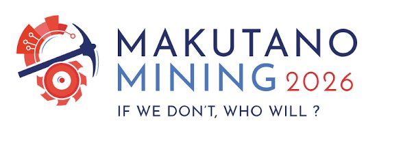
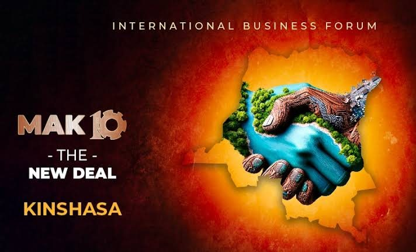

Du dimanche 22 au mercredi 25 novembre 2026, Kinshasa accueille Makutano Mining, un forum consacré aux minerais critiques comme le cobalt, le cuivre, le lithium et le coltan. Il est organisé par le réseau d'affaires Makutano et prévoit un espace de rendez-vous entre entreprises, investisseurs et institutions.
Ce qui se prépare
Le programme s'étale sur quatre jours : un pré-forum le 22 novembre, puis des débats et des rencontres d'affaires jusqu'aux panels de clôture du 25 novembre. Les sessions sont annoncées au Fleuve Congo Hôtel, au Pullman Kinshasa et dans quelques lieux privés, selon Financial Afrik et Capmad.
Le forum est organisé autour de sept thèmes. Il comprend une « Deal Room » : un espace de rendez-vous à huis clos entre investisseurs, institutions financières et autorités congolaises. Le programme et les inscriptions sont en ligne sur makutano.cd.
Makutano est un réseau d'affaires fondé par Nicole Sulu. Le 17 novembre, elle a expliqué le choix de Kinshasa pour accueillir le forum, a rapporté Actualite.cd. Le groupe congolais VUKA, qui organise la DRC Mining Week, s'est associé à l'événement pour en faire la promotion.

Pourquoi ça compte pour un entrepreneur
La RDC a fourni environ 73 % du cobalt extrait dans le monde en 2025, selon African Business. Autour des mines, il n'y a pas que les grandes compagnies : il faut transporter, nourrir, loger, entretenir, former, assurer. Ce sont des marchés pour des PME.
À partir du 1er décembre, l'ARSP demande de nouveaux documents aux entreprises de sous-traitance : nous l'avions expliqué dans notre article sur ce que l'ARSP exige des entreprises. Un forum comme celui-ci est l'endroit où les donneurs d'ordre et les financeurs sont dans la même salle.

Ce que tu peux en tirer
- Va voir le programme. Les conditions d'inscription et les sessions sont publiées sur le site du forum : repère celles qui touchent ton métier.
- Prépare une présentation d'une page. Qui tu es, ce que tu fais, pour qui tu l'as déjà fait. Dans une rencontre d'affaires, on a souvent cinq minutes.
- Pense aussi aux services. Transport, restauration, maintenance, sécurité, communication : les entreprises minières achètent tout cela.
- Mets tes papiers en ordre avant. Un donneur d'ordre qui s'intéresse à toi demandera tes documents d'entreprise.
Sources : Actualite.cd (18 et 19 novembre 2026), Financial Afrik et Capmad (septembre 2026), African Business (octobre 2026), communiqué de VUKA Group RDC (14 septembre 2026).
LUKOJI · Innover · Créer · Impacter